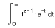
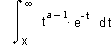

Gamma functions |
Γ(z) Returns the value of the Euler gamma function of z. (To type Γ, press G [Ctrl] G.)

Γ(a, x) Returns the value of the incomplete gamma function of x with parameter a. Γ(a,0) = Γ(a).

lnΓ(z) Returns the natural log of the Euler gamma function, evaluated at z.
Γ(z + 1) = z Γ(z)
Γ(z)·Γ(1 − z) = π·csc(π·z)
Γ(n + 1) = n!